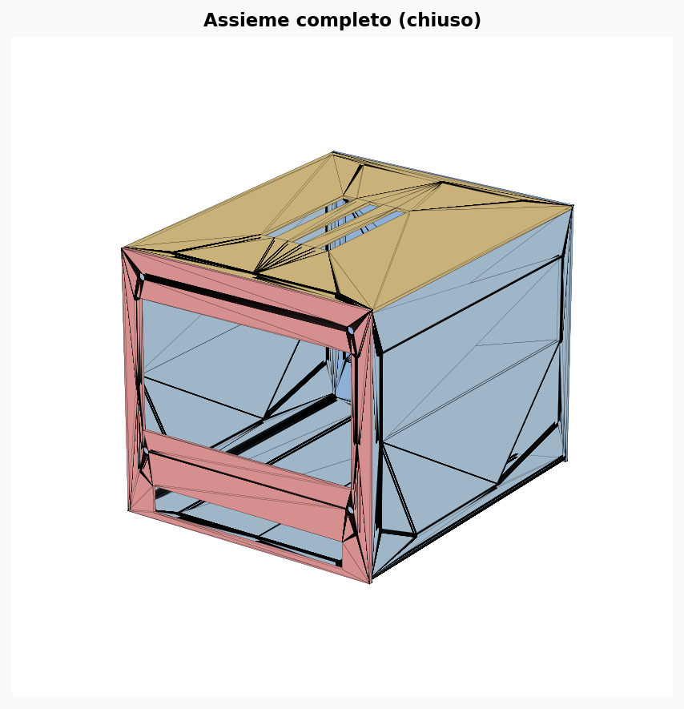
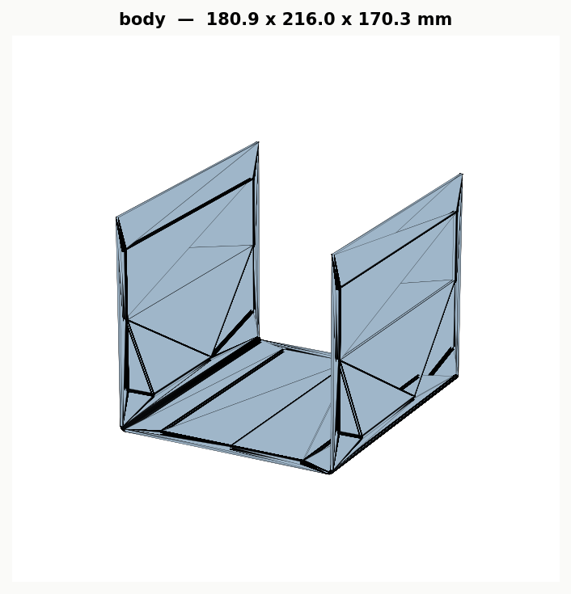
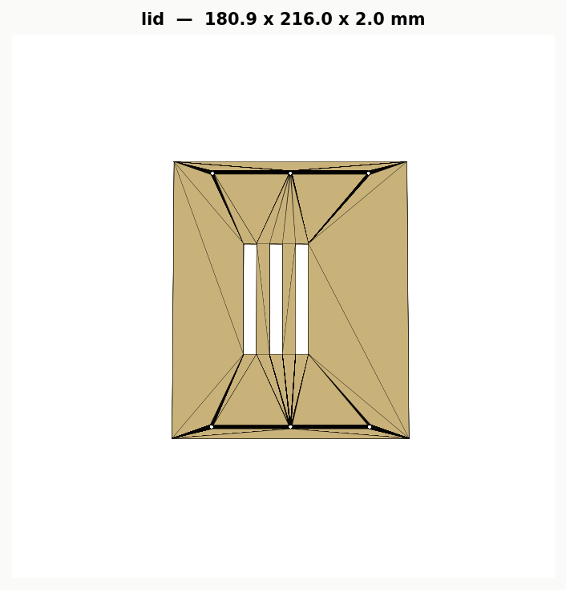
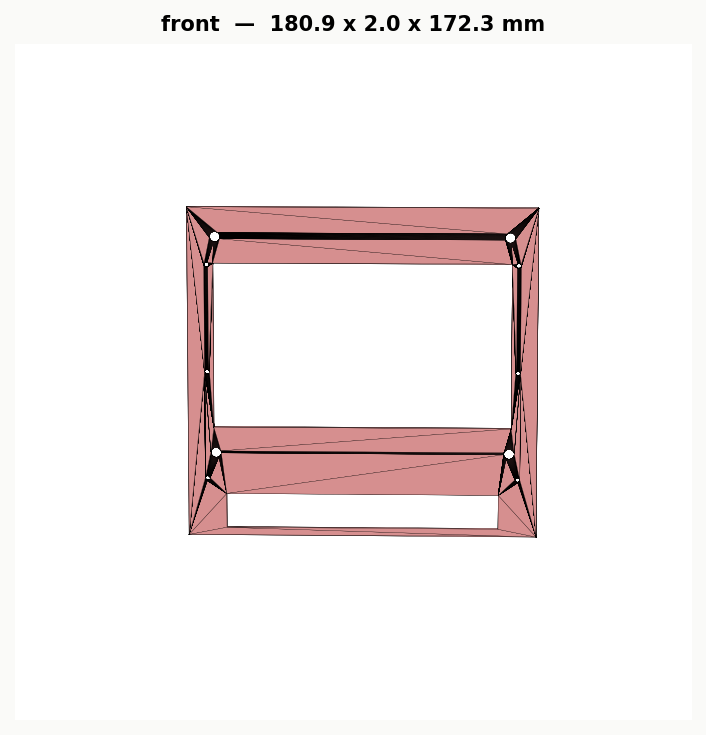
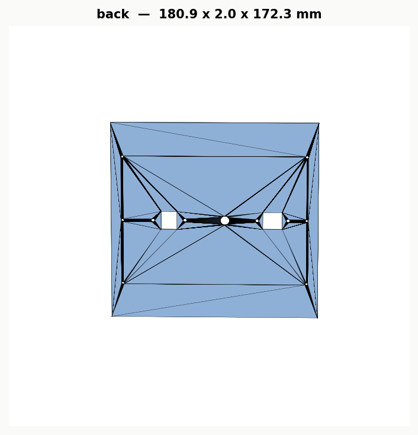
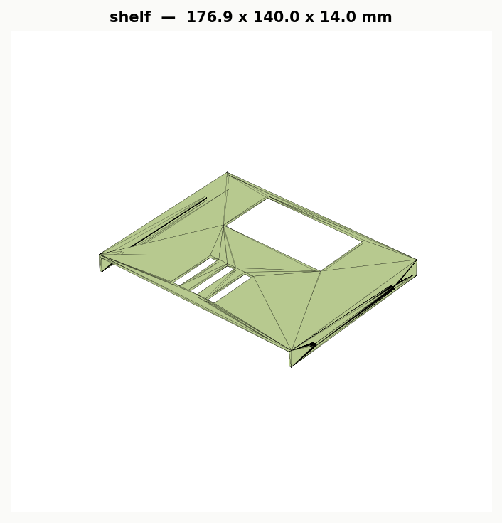

Manuale di montaggio scocca — lamiera alluminio piegata, 5 pezzi
streamer_sheetmetal.py
→ STL → render_parts.py), un'immagine isolata per ciascun pezzo — la stessa
geometria che va in produzione JLCPCB, non illustrazioni di fantasia. Viti, squadrette
e rondelle sono componenti standard acquistati a parte: per quelle uso icone schematiche,
non essendoci un render dedicato.






Frontale e retro sono pannelli piatti (nessun risvolto): si fissano ai fianchi solo tramite le squadrette interne, 3 livelli per lato (basso / metà / alto).
Il coperchio non si avvita ai fianchi (A non ha risvolti): B e A restano uniti da 6 tiranti filettati M3 (~168mm) verticali, allineati (stesse X/Y) tra il fondo e il coperchio.
✔ Scocca completata.
| Step | ①a M3×10 | ①b M3×8 | ② Squadretta | ③ Rondella | ④ Dado DC | ⑥ Tirante | ⑦ Dado M3 |
|---|---|---|---|---|---|---|---|
| 1 — Schermo | 4 | — | — | 4 | — | — | — |
| 2 — Connettori | — | proprie | — | — | 1 | — | — |
| 4 — Ripiano | — | 4 | — | — | — | — | — |
| 6 — Frontale/Retro | — | 24 | 12 | — | — | — | — |
| 7 — Tiranti | — | — | — | 12 | — | 6 | 12 |
| Totale | 4 | 28 | 12 | 16 | 1 | 6 | 12 |